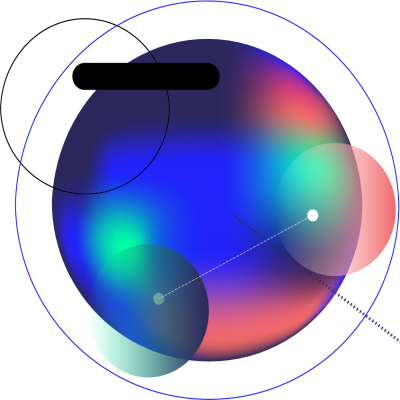
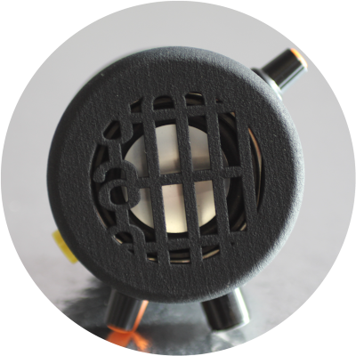
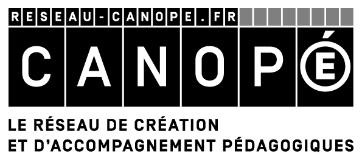

What's AmStramGrame?
ARTS & SCIENCES
An arts and sciences educational project (STEAM), bringing together services and resources for the educational community. It aims at making abstract scientific concepts more tangible and concrete through musical creation and computer programming.

FOR WHOM?

A project for primary and middle school students, as well as their teachers. It places sciences and engineering at the heart of the pedagogical approach applying them to the fields of musical and sound creation.
Tools
FAUST
Faust (Functional AUdio STream) is a programming langauge created and developed at Grame. It allows for the rapid and simple design of synthesizers (electronic musical instrument) and sound effects for a large number of platforms. In particular, it can be used to create musical web and mobile applications.

THE GRAMOPHONE

The Gramophone is an audio device/musical instrument specifically designed for the AmStramGrame project. Its various sensors and controllers (e.g., accelerometer, gyroscope, light sensor, etc.) make it react to the user's gestures. Its rechargeable battery offering approximately five hours of autonomy and its powerful speaker make it independent from any computer, bringing it closer to traditional acoustic musical instruments.
THE FAUST WEB IDE
The Faust Web IDE is an online tool to write and test Faust programs directly in the web browser and then export them to the Gramophone via the GramoLoader application. A simplified version of the Faust Web IDE has been created as part of AmStramGrame to facilitate its use by beginners.

THE FAUST PLAYGROUND

The Faust Playground is an online tool to assemble programs written in Faust in a simple way with a graphical interface. In particular, it can be used to program the Gramophone, smartphones, etc.
GAMELAN
A set of smartphone musical applications inspired by the Javanese musical tradition to which is added electronic sound universes. The 7 applications (Attackey, Baliphone, DroneLAN, Sequencer, ShakerXY, Sinusoïde, Atomicro) of the GameLan family can be played solo or in orchestra using smartphone movements. No musical prerequisite, only gestures will make the user a musician.

A collaboration between GRAME-CNCM and Canopé
GRAME
Grame is a national center for musical creation (CNCM). Its main mission is to enable the design and production of new musical works, in a context of transversality of the arts and of arts/sciences synergies.

CANOPÉ

Canopé aims at providing support and material to the educational community in France under the supervision of the French ministry of education. It publishes and distributes multi-format educational resources that meet the needs of the educational community.
PATRONS, SPONSORS, AND PUBLIC PARTNERS